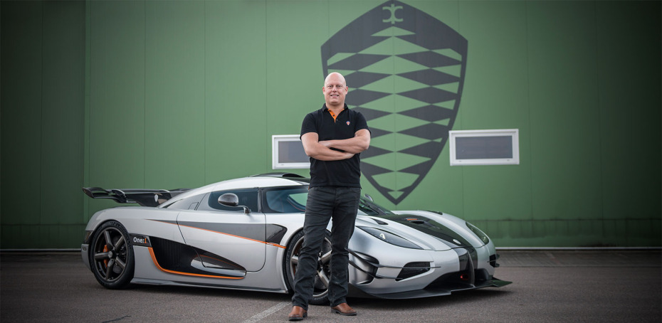

A Man And His Dream
像许多年轻人一样，克里斯蒂安·冯·科尼赛克在小的时候对机械很着迷。他甚至梦想创造出他的完美跑车。然而，与我们形成鲜明对比的是，克里斯蒂安在22岁的时候，勇往直前，把梦想变成了现实。 以非凡的决心和远见,基督教研究的限制技术和创新创造的超级跑车的梦想——科尼赛克CC。科尼赛克CC是一个梦想的表现及其成功完成了基督教的勇气继续下去,并与他人分享他的追求完美。于是，以他名字命名的汽车公司诞生了。
科尼赛克的故事是一样迷人和独特的汽车本身。克里斯蒂安第一次看到挪威的一部定格动画电影时才5岁，影片讲述的是一个自行车修理工自己制造赛车的故事。这部电影一定给我留下了深刻的印象，因为一个年轻的基督徒从小就梦想着创造出完美的跑车。大约17年后，尽管困难重重，他还是做到了。 Christian在早期就表现出了对设计的兴趣，并喜欢发现新的技术解决方案所带来的挑战。在他还是个小男孩的时候，他就拆除了录像机和烤面包机，只是想看看它们是如何工作的，是否还可以改进。
在他十几岁的时候，他就被认为是镇上最好的助力车调音师。在20世纪90年代初，大约在他18岁生日的时候，克里斯蒂安开始更加认真地从事技术革新工作，并提出了一些有趣的想法。
其中一项发明被称为芯片播放器。他相信，总有一天，计算机内存芯片将能够存储一整张CD的数据，这可能会成为一种更便宜的购买和存储音乐的方式。他进行了一些专利搜索，寻找一种可以播放芯片而不是光盘的音乐设备。然而，最后似乎没有人对这个想法感兴趣，所以克里斯蒂安继续前行，没有意识到几年后他的想法会成为规范。
1991年，他发明了一种不用粘合剂或钉子就能将地板连接起来的新方法。他称之为“点击”，因为这个配置文件可以让木板简单地点击在一起。克里斯蒂安把这项技术送给了他在比利时经营地板工厂的岳父。他拒绝了这个想法，说如果可行的话，早就有人提出了。克里斯蒂安随后向其他一些地板制造商展示了这个概念，他们也拒绝了它。1995年，一家比利时和一家瑞典公司申请了与克里斯蒂安的“点击地板”完全相同的解决方案的专利——他们甚至称其为“点击地板”。这项创新现在已经变成了一个数十亿美元的产业…